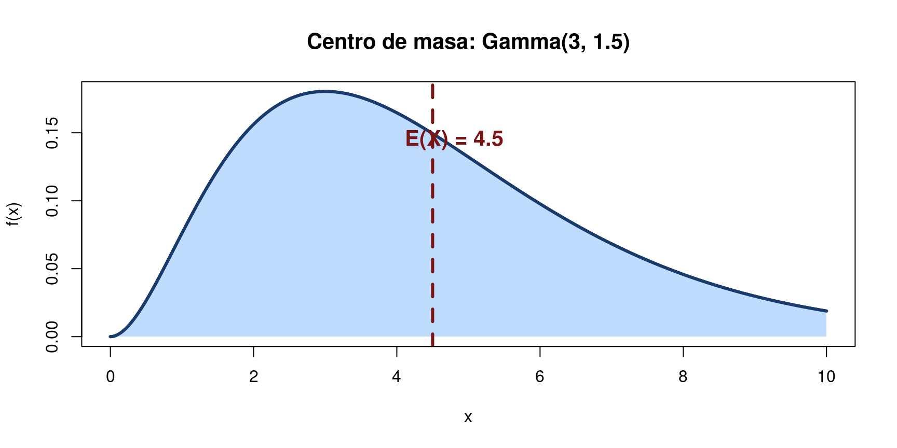
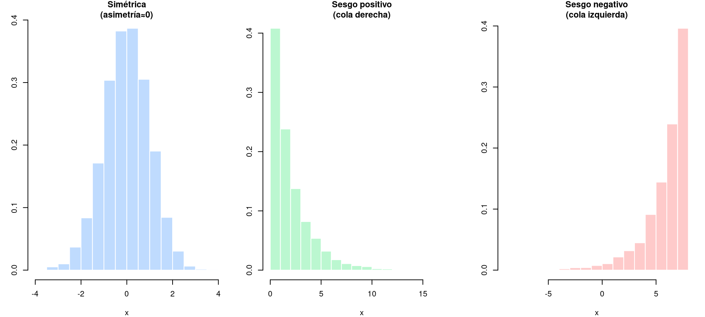
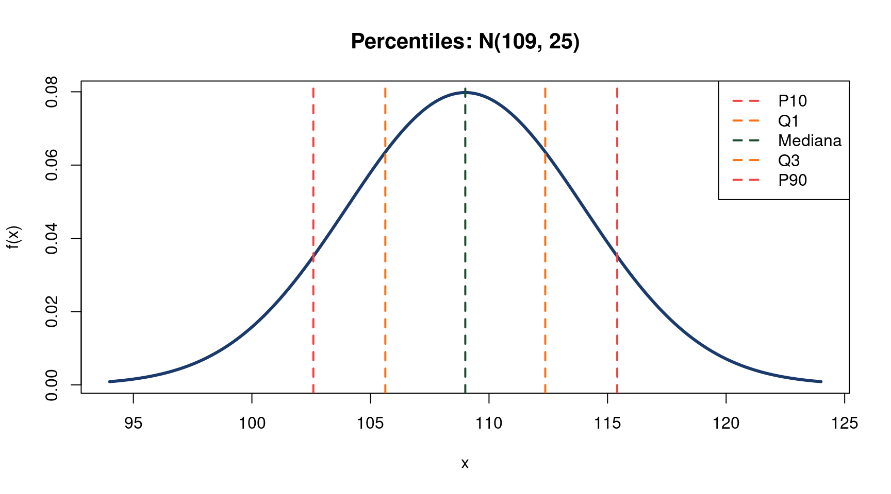
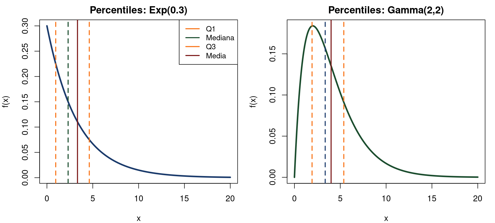
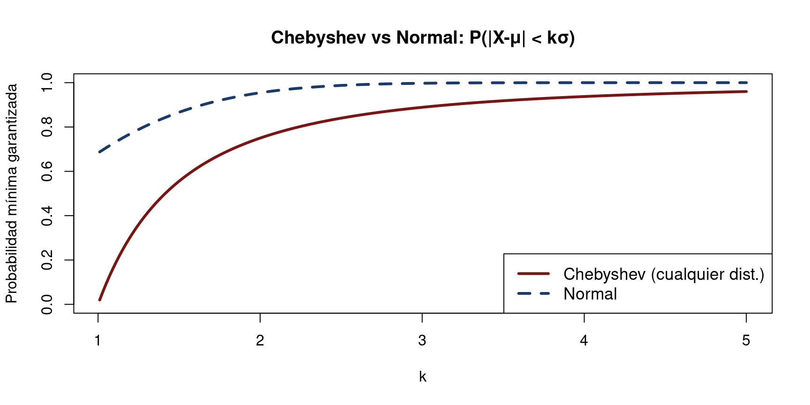

[1] 3.49489Bioestadística Fundamental
Departamento de Estadı́stica, Sede Bogotá
Clase 12
Valor Esperado, Varianza y Percentiles
Resumiendo distribuciones: centro, dispersión y posición
Bioestadística Fundamental — Departamento de Estadística, UNAL Bogotá
¿Por qué resumir una distribución?
- La FMP o FDP describe toda la distribución, pero trabajar con ella completa no siempre es práctico.
- Necesitamos resúmenes numéricos que capturen las características esenciales: ¿dónde está el centro?, ¿cuánta dispersión hay?
- El valor esperado responde: ¿cuál es el valor promedio a largo plazo?
- La varianza responde: ¿qué tan dispersos están los valores alrededor del promedio?
- Los percentiles responden: ¿qué valor supera a un porcentaje dado de la distribución?
Valor esperado — variable discreta
Definición: Valor Esperado (discreta)
Si \(X\) es una variable aleatoria discreta con FMP \(p(x)\), su valor esperado es: \[E(X) = \sum_{x \in \text{soporte}} x \cdot p(x)\] siempre que la suma sea absolutamente convergente.
- \(E(X)\) es el promedio ponderado de los valores posibles, con pesos iguales a sus probabilidades.
- También llamado media, expectativa o primer momento de \(X\). Se denota \(\mu_X\) o simplemente \(\mu\).
Valor esperado — variable continua
Definición: Valor Esperado (continua)
Si \(X\) es una variable aleatoria continua con FDP \(f(x)\), su valor esperado es: \[E(X) = \int_{-\infty}^{\infty} x\, f(x)\, dx\] siempre que la integral sea absolutamente convergente.
- La integral reemplaza a la suma: \(x\) se pondera por la densidad \(f(x)\) en cada punto.
- El valor esperado es el centro de masa de la distribución.
Interpretación geométrica

Valor esperado — ejemplos básicos
Ejemplo — Lanzamiento de dado
Para un dado justo: \(X \in \{1,2,3,4,5,6\}\), \(p(x) = 1/6\). \[E(X) = \frac{1+2+3+4+5+6}{6} = \frac{21}{6} = 3.5\] El 3.5 nunca se observa, pero es el promedio a largo plazo de muchos lanzamientos.
E(X) para distribuciones conocidas
| Distribución | Parámetros | \(E(X)\) |
|---|---|---|
| Bernoulli(\(p\)) | \(p\) | \(p\) |
| Binomial(\(n,p\)) | \(n\), \(p\) | \(np\) |
| Poisson(\(\lambda\)) | \(\lambda\) | \(\lambda\) |
| Uniforme(\(a,b\)) | \(a\), \(b\) | \(\frac{a+b}{2}\) |
| Normal(\(\mu,\sigma^2\)) | \(\mu\), \(\sigma^2\) | \(\mu\) |
| Exponencial(\(\lambda\)) | \(\lambda\) | \(\frac{1}{\lambda}\) |
| Gamma(\(\alpha,\beta\)) | \(\alpha\), \(\beta\) | \(\alpha\beta\) |
Derivación: E(X) de la Binomial
Demostración: E(X) = np para Bin(n,p)
\[E(X) = \sum_{k=0}^n k\binom{n}{k}p^k(1-p)^{n-k} = np\sum_{k=1}^n \binom{n-1}{k-1}p^{k-1}(1-p)^{n-k}\] \[= np \sum_{j=0}^{n-1}\binom{n-1}{j}p^j(1-p)^{n-1-j} = np \cdot (p + 1 - p)^{n-1} = np \quad \square\]
E(X) de la Exponencial — cálculo
Demostración: E(X) = 1/λ para Exp(λ)
\[E(X) = \int_0^\infty x \cdot \lambda e^{-\lambda x}\,dx\] Integración por partes con \(u = x\), \(dv = \lambda e^{-\lambda x}dx\): \[= \left[-xe^{-\lambda x}\right]_0^\infty + \int_0^\infty e^{-\lambda x}\,dx = 0 + \frac{1}{\lambda} = \frac{1}{\lambda} \quad \square\]
Valor esperado de una función — Ley del estadístico inconsciente
Ley del estadístico inconsciente (LOTUS)
Si \(Y = g(X)\), no es necesario encontrar la distribución de \(Y\): \[E[g(X)] = \begin{cases} \displaystyle\sum_x g(x)\,p(x) & \text{(discreta)} \\[6pt] \displaystyle\int_{-\infty}^\infty g(x)\,f(x)\,dx & \text{(continua)} \end{cases}\]
- Ejemplo: \(E(X^2)\) se calcula directamente integrando \(x^2 f(x)\), sin derivar primero la distribución de \(X^2\).
Propiedades del valor esperado
Propiedades de E(·)
Para constantes \(a\), \(b\) y v.a. \(X\), \(Y\):
- \(E(a) = a\)
- \(E(aX) = a\,E(X)\)
- \(E(X + b) = E(X) + b\)
- \(E(aX + b) = a\,E(X) + b\) (linealidad)
- \(E(X + Y) = E(X) + E(Y)\) (siempre, sin importar independencia)
Varianza — definición
Definición: Varianza
La varianza de \(X\) mide la dispersión alrededor de la media: \[\text{Var}(X) = E\!\left[(X - \mu)^2\right] = E(X^2) - [E(X)]^2\] donde \(\mu = E(X)\). La raíz cuadrada \(\sigma = \sqrt{\text{Var}(X)}\) se llama desviación estándar.
- La fórmula \(\text{Var}(X) = E(X^2) - \mu^2\) es computacionalmente conveniente.
- \(\text{Var}(X) \geq 0\) siempre; es cero solo si \(X\) es constante con probabilidad 1.
Varianza — para variables discretas y continuas
Discreta
\[\text{Var}(X) = \sum_x (x-\mu)^2\, p(x)\] \[= \sum_x x^2 p(x) - \mu^2\]
Continua
\[\text{Var}(X) = \int_{-\infty}^\infty (x-\mu)^2 f(x)\,dx\] \[= \int_{-\infty}^\infty x^2 f(x)\,dx - \mu^2\]
Varianza para distribuciones conocidas
| Distribución | \(E(X)\) | \(\text{Var}(X)\) |
|---|---|---|
| Bernoulli(\(p\)) | \(p\) | \(p(1-p)\) |
| Binomial(\(n,p\)) | \(np\) | \(np(1-p)\) |
| Poisson(\(\lambda\)) | \(\lambda\) | \(\lambda\) |
| Uniforme(\(a,b\)) | \(\frac{a+b}{2}\) | \(\frac{(b-a)^2}{12}\) |
| Normal(\(\mu,\sigma^2\)) | \(\mu\) | \(\sigma^2\) |
| Exponencial(\(\lambda\)) | \(\frac{1}{\lambda}\) | \(\frac{1}{\lambda^2}\) |
| Gamma(\(\alpha,\beta\)) | \(\alpha\beta\) | \(\alpha\beta^2\) |
Propiedades de la varianza
Propiedades de Var(·)
Para constantes \(a\), \(b\) y v.a. \(X\), \(Y\) independientes:
- \(\text{Var}(a) = 0\)
- \(\text{Var}(aX) = a^2\, \text{Var}(X)\)
- \(\text{Var}(X + b) = \text{Var}(X)\)
- \(\text{Var}(aX + b) = a^2\, \text{Var}(X)\)
- \(\text{Var}(X + Y) = \text{Var}(X) + \text{Var}(Y)\) (si \(X \perp Y\))
Varianza — ejemplo con Poisson
Ejemplo — Casos de dengue
El número semanal de casos de dengue en un municipio sigue \(X \sim \text{Poi}(5)\). Calcule \(E(X)\), \(\text{Var}(X)\) y \(\sigma\).
Solución
\[E(X) = \lambda = 5 \quad \text{casos/semana}\] \[\text{Var}(X) = \lambda = 5\] \[\sigma = \sqrt{5} \approx 2.24 \quad \text{casos/semana}\]
Cálculo numérico de E(X) y Var(X)
E(X) = 5 Var(X) = 5 sd(X) = 2.2361 Derivación: Var(X) de la Binomial
Var(X) = np(1-p) para Bin(n,p)
Escribir \(X = X_1 + \cdots + X_n\) con \(X_i \sim \text{Ber}(p)\) independientes: \[\text{Var}(X) = \sum_{i=1}^n \text{Var}(X_i) = n\,\text{Var}(X_1)\] \[\text{Var}(X_1) = E(X_1^2) - [E(X_1)]^2 = p - p^2 = p(1-p)\] \[\therefore \text{Var}(X) = np(1-p) \quad \square\]
Coeficiente de variación
Coeficiente de variación (CV)
\[CV = \frac{\sigma}{|\mu|} \times 100\%\] Mide la dispersión relativa a la media. Es adimensional.
- Útil para comparar la variabilidad de variables medidas en distintas unidades o con distintas medias.
- Ejemplo: producción de leche con \(\mu = 15\) L/día y \(\sigma = 3\) L tiene \(CV = 20\%\).
Momentos de una distribución
Momentos
El \(k\)-ésimo momento de \(X\) es \(\mu_k' = E(X^k)\). El \(k\)-ésimo momento central es \(\mu_k = E[(X-\mu)^k]\).
- \(\mu_1' = \mu = E(X)\) (media)
- \(\mu_2 = \text{Var}(X)\) (varianza)
- \(\mu_3 / \sigma^3\): asimetría (skewness)
- \(\mu_4 / \sigma^4\): curtosis (kurtosis)
Asimetría y curtosis

Percentiles — definición
Definición: Percentil p de X
El percentil \(p\) (o cuantil de orden \(p\)) de \(X\), denotado \(\eta(p)\) o \(x_p\), es el valor tal que: \[F(\eta(p)) = P(X \leq \eta(p)) = p, \quad 0 < p < 1\] Es la función inversa de la FDA: \(\eta(p) = F^{-1}(p)\).
- El percentil \(p\) indica que una fracción \(p\) de la distribución se ubica por debajo de \(\eta(p)\).
Percentiles — variable continua
Cálculo de percentiles (continua)
Para una v.a. continua con FDA \(F\), el percentil \(p\) es el valor \(\eta(p)\) que satisface: \[\int_{-\infty}^{\eta(p)} f(x)\,dx = p\] En R:
qnorm(p, mu, sigma), qexp(p, lambda), qgamma(p, alpha, beta), etc.
-
El prefijo
qen R viene de quantile y calcula exactamente \(F^{-1}(p)\).
Cuartiles
Cuartiles Q1, Q2, Q3
Los cuartiles dividen la distribución en cuatro partes iguales:
- \(Q_1 = \eta(0.25)\): primer cuartil (percentil 25)
- \(Q_2 = \eta(0.50)\): mediana (percentil 50)
- \(Q_3 = \eta(0.75)\): tercer cuartil (percentil 75)
Cuartiles de la distribución Normal
Q1 = 43.26 Q2 = 50 (mediana)Q3 = 56.74 IQR= 13.49 Mediana vs Media
Mediana
La mediana \(m = \eta(0.5)\) es el valor que divide la distribución en dos mitades iguales: \[P(X \leq m) = 0.5\] Es robusta ante valores extremos.
Media vs Mediana
- Normal simétrica: media = mediana.
- Sesgo positivo: media > mediana.
- Sesgo negativo: media < mediana.
Mediana de la Exponencial
Ejemplo — Mediana de Exp(λ)
Encontrar la mediana \(m\) de \(X \sim \text{Exp}(\lambda)\): \[F(m) = 1 - e^{-\lambda m} = 0.5 \implies e^{-\lambda m} = 0.5 \implies m = \frac{\ln 2}{\lambda}\] Para \(\lambda = 0.2\): \(m = \ln(2)/0.2 \approx 3.47\) horas, mientras que \(E(X) = 1/0.2 = 5\) horas.
Percentiles de la Normal — ejemplo clínico
Ejemplo — Talla de niños
La talla de niños de 5 años en Colombia sigue \(X \sim N(109, 5^2)\) cm. Calcule:
- El percentil 10 (talla baja).
- El percentil 90 (talla alta).
- La proporción de niños entre \(Q_1\) y \(Q_3\).
Percentiles Normal — solución
Visualización de percentiles

Rango intercuartílico — uso práctico
IQR como medida de dispersión robusta
El \(IQR = Q_3 - Q_1\) contiene el 50% central de la distribución. Es insensible a valores extremos, a diferencia de la varianza.
Regla para outliers (Tukey): un valor \(x\) es atípico si: \[x < Q_1 - 1.5 \cdot IQR \quad \text{o} \quad x > Q_3 + 1.5 \cdot IQR\]
Regla para outliers (Tukey): un valor \(x\) es atípico si: \[x < Q_1 - 1.5 \cdot IQR \quad \text{o} \quad x > Q_3 + 1.5 \cdot IQR\]
IQR en la Normal — relación con σ
IQR de la Normal
Para \(X \sim N(\mu, \sigma^2)\): \[IQR = Q_3 - Q_1 = \mu + 0.6745\sigma - (\mu - 0.6745\sigma) = 2 \times 0.6745\sigma \approx 1.35\sigma\]
Percentiles de distribuciones asimétricas

Ejercicio: E(X) y Var(X) con una FMP dada
Ejercicio — FMP personalizada
Sea \(X\) el número de procedimientos fallidos en una jornada quirúrgica, con:
| \(x\) | 0 | 1 | 2 | 3 |
|---|---|---|---|---|
| \(p(x)\) | 0.50 | 0.30 | 0.15 | 0.05 |
Calcule \(E(X)\), \(E(X^2)\), \(\text{Var}(X)\) y \(\sigma\).
Ejercicio — solución
Ejercicio: percentil de la Gamma
Ejercicio — Tiempo de recuperación
El tiempo de recuperación (días) de pacientes con hepatitis A sigue \(X \sim \text{Gamma}(\alpha=4, \beta=7)\). Calcule:
- \(E(X)\) y \(\text{Var}(X)\).
- El percentil 90 (tiempo que el 90% de pacientes ya se recuperó).
- La probabilidad de recuperarse en menos de 20 días.
Ejercicio Gamma — solución
E(X) = 28 díasVar(X) = 196 días²sd(X) = 14 díasP90 = 46.77 díasP(X<20)= 0.3208 Valor esperado en decisiones — VE como criterio
El valor esperado puede usarse como criterio de decisión en situaciones con incertidumbre: elegir la acción que maximiza \(E[\text{ganancia}]\) o minimiza \(E[\text{pérdida}]\).
Ejemplo — Política de vacunación
Si vacunar un rebaño cuesta $200 por animal y la infección cuesta $800 con probabilidad 0.4, ¿conviene vacunar?
- \(E[\text{costo sin vacuna}] = 0.4 \times 800 = \$320\) por animal.
- \(E[\text{costo con vacuna}] = \$200\) fijo.
- Vacunar es la decisión con menor costo esperado.
Desigualdad de Chebyshev
Desigualdad de Chebyshev
Para cualquier variable aleatoria \(X\) con media \(\mu\) y varianza finita \(\sigma^2\): \[P(|X - \mu| \geq k\sigma) \leq \frac{1}{k^2}, \quad k > 1\] Equivalentemente: \(P(|X - \mu| < k\sigma) \geq 1 - \frac{1}{k^2}\).
- Para \(k=2\): al menos el 75% de los valores caen dentro de 2 desviaciones estándar de la media, sin importar la distribución.
Chebyshev vs Normal — comparación

Momentos generadores de probabilidad
Función generatriz de momentos (FGM)
La FGM de \(X\) es \(M_X(t) = E(e^{tX})\), definida en un entorno de \(t=0\). Sus derivadas en \(t=0\) dan los momentos: \[M_X^{(k)}(0) = E(X^k)\]
- La FGM identifica unívocamente la distribución: dos distribuciones con la misma FGM son iguales.
- Ejemplo: \(M_{N(\mu,\sigma^2)}(t) = \exp(\mu t + \frac{1}{2}\sigma^2 t^2)\).
Taller en clase
Ejercicios para resolver en clase
Valor esperado, varianza y percentiles
Taller 1: E(X) y Var(X) desde la definición
Problema
El número de crías nacidas vivas por parto en una especie de mamífero silvestre tiene la siguiente distribución:
| \(x\) | 1 | 2 | 3 | 4 |
|---|---|---|---|---|
| \(p(x)\) | 0.20 | 0.45 | 0.25 | 0.10 |
- Calcule \(E(X)\) a mano y verifique en R.
- Calcule \(\text{Var}(X)\) usando \(E(X^2) - [E(X)]^2\).
- Interprete \(\sigma\) en el contexto del problema.
- ¿Cuántas crías se esperan en 50 partos? ¿Cuál es la desviación estándar total?
Taller 1: Solución
E(X) = 2.25 Var(X) = 0.7875 sd(X) = 0.8874 críasE(50 partos) = 112.5 críassd(50 partos)= 6.275 críasTaller 2: Propiedades de E(X) y Var(X)
Problema
Sea \(X\) el peso corporal (kg) de una nutria gigante con \(E(X) = 22\) kg y \(\text{Var}(X) = 9\) kg².
- Calcule \(E(2X - 5)\) y \(\text{Var}(2X - 5)\).
- Si \(Y\) es el peso en libras: \(Y = 2.205 X\). Calcule \(E(Y)\) y \(\sigma_Y\).
- Si \(W = X_1 + X_2\) (suma de dos nutrias independientes), calcule \(E(W)\) y \(\text{Var}(W)\).
- ¿Cuánto debe valer \(a\) para que \(E(aX) = 1\)? ¿Y \(\text{Var}(aX) = 1\)?
Taller 2: Solución
Solución
- \(E(2X-5) = 2(22)-5 = 39\); \(\text{Var}(2X-5) = 4\cdot9 = 36\), \(\sigma=6\).
- \(E(Y) = 2.205\times22 = 48.51\) lb; \(\sigma_Y = 2.205\times3 = 6.615\) lb.
- \(E(W) = 22+22 = 44\); \(\text{Var}(W) = 9+9 = 18\).
- \(a=1/E(X)=1/22\); \(a=1/\sigma=1/3\).
Taller 3: Percentiles y cuartiles
Problema
La presión arterial sistólica (mmHg) en adultos mayores de 60 años de una población rural colombiana sigue \(X \sim N(138,\; 18^2)\).
- Calcule \(Q_1\), \(Q_2\) (mediana) y \(Q_3\). ¿Son iguales a \(\mu\)?
- Calcule el \(IQR\) y compárelo con \(1.35\sigma\).
- ¿Qué presión define el umbral del 5% superior (hipertensión severa)?
- Un paciente tiene 160 mmHg. ¿En qué percentil se ubica?
Taller 3: Solución
Q1= 125.9 Mediana= 138 Q3= 150.1 IQR = 24.28 vs 1.35σ = 24.3 P95 = 167.6 mmHgPercentil(160)= 88.9 %Taller 4: Chebyshev en la práctica
Problema
El número de huevos de Ascaris lumbricoides por gramo de heces tiene media \(\mu = 1200\) y desviación estándar \(\sigma = 400\) (distribución desconocida).
- Use Chebyshev para garantizar que al menos el 75% de los valores caen en el intervalo \((\mu - k\sigma,\; \mu + k\sigma)\). ¿Qué \(k\) se necesita?
- Con ese \(k\), calcule el intervalo en unidades de huevos/g.
- Si asumiera normalidad, ¿cuál sería la probabilidad real en ese mismo intervalo?
- ¿Por qué Chebyshev es más conservador?
Taller 4: Solución
Solución
- \(1 - 1/k^2 \geq 0.75 \implies k^2 \geq 4 \implies k = 2\).
- \((\mu-2\sigma,\;\mu+2\sigma) = (400,\; 2000)\) huevos/g.
Intervalo k=2: 400 a 2000 P. normal : 0.9545 Chebyshev garantiza >= 0.75, Normal da ~0.9545Resumen: E(X), Var(X) y percentiles
Centro y dispersión
- \(E(X) = \mu\): valor promedio a largo plazo
- \(\text{Var}(X) = E[(X-\mu)^2]\): dispersión cuadrática
- \(\sigma = \sqrt{\text{Var}(X)}\): en las mismas unidades de \(X\)
- \(CV = \sigma/|\mu|\): dispersión relativa
Posición y forma
- \(\eta(p) = F^{-1}(p)\): percentil \(p\)
- \(Q_1, Q_2, Q_3\): cuartiles
- \(IQR = Q_3 - Q_1\): dispersión robusta
- Asimetría y curtosis: forma de la distribución
Propiedades clave en resumen
Para recordar
- \(E(aX+b) = aE(X)+b\) — linealidad de la esperanza
- \(\text{Var}(aX+b) = a^2\text{Var}(X)\) — traslación no cambia varianza
- \(\text{Var}(X+Y) = \text{Var}(X)+\text{Var}(Y)\) si \(X \perp Y\)
- \(P(|X-\mu|\geq k\sigma) \leq 1/k^2\) — Chebyshev
- Para la Normal: IQR \(\approx 1.35\sigma\)
Próxima clase
Próximas clases
Estimación puntual e intervalos de confianza
Del modelo teórico a la inferencia sobre datos reales